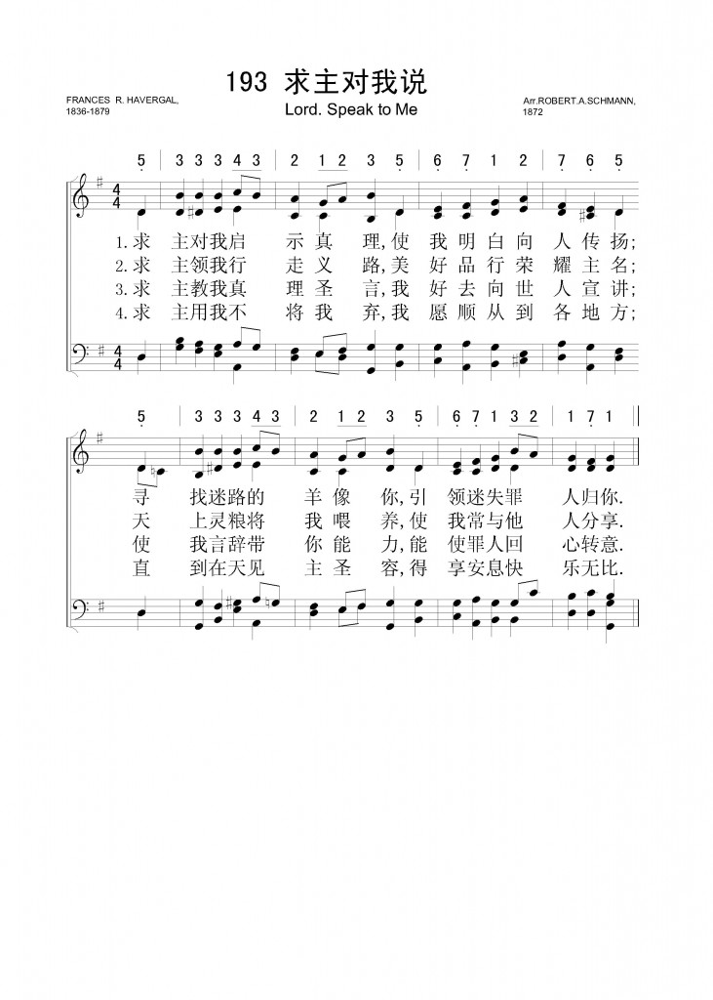

0754 Lord, Speak to Me, That I May Speak _Frances
R. Havergal 主，懇求你向我說話 CANONBURY
▲
| 簡介
Lord, Speak to Me that I May Speak |
| Two great truths inform this text:
first, that the testimony of experience is powerful and persuasive; and
second, that no one should venture to minister on one’s own strength
rather than God’s. The tune reflects a 19th-century practice of adapting
piano pieces as hymn tunes. |
|
|
477. 主，懇求你向我說話，
(Lord, Speak to Me, That I May Speak) |
|
1 Lord, speak to me that I may speak
In living echoes of your tone.
As you have sought, so let me seek
Your erring children, lost and lone.
2 Oh, lead me, Lord, that I may lead
The wand'ring and the wav'ring feet.
Oh, feed me, Lord, that I may feed
Your hungry ones with manna sweet.
3 Oh, teach me, Lord, that I may teach
The precious truths which you impart.
And wing my words that they may reach
The hidden depths of many a heart.
4 Oh, fill me with your fullness, Lord,
Until my very hearts o'erflows
In kindling thought and glowing word,
Your love to tell, your praise to show.
5 Oh, use me, Lord, use even me,
Just as you will, and when, and where
Until your blessed face I see,
Your rest, your joy, your glory share.
|
主，懇求你向我說話，使我說話像你回聲；
我願尋找，像你尋我，領回迷路孤單同胞。
求主教我，使我善教，傳達我主寶貴真理；
使我話語如生翅膀，飛入多人心靈深處。
求主賜我甜蜜安息，使我也能撫慰他人；
說話合宜如出主口，鼓勵疲乏需要之人。
願主完美充滿我心，使我生命流露豐盛；
思想言語如火如光，表達主愛，彰顯主榮。
求主用我，雖我不配，遵主旨意，隨時隨地，
直到我見父神聖顏，享主安息，歡樂，榮耀。 |
|

http://www.xueshengshi.com/?p=3617
 |
| |
|
http://www.hymncompanions.org/Apr/06/stream.php
求主對我述說真理，使我做祢回聲傳遞；
我願尋找迷羊像祢，引領迷失罪人歸祢。
求主領我行走義路，使我亦能引人腳步；
天上靈糧將我餵養，使我常與他人分享。
求主教我真理聖言，我好去向世人宣傳；
使我言辭帶祢能力，能使人心回轉向祢。
求主賜我豐富生命，願主豐盛充滿我心；
我的言行全聽主命，時時讚揚主愛恩情。
求主用我不將我棄，我願順從到任何地；
直到在天見主聖容，同享安息快樂光榮。
 (請點耳機收聽)
(請點耳機收聽)
許多時候我們求神對我們說話，然後聽到了祂的話語，卻因與我們心意相違，而不願回應。 如果我們不回應，就得不到應許，而我們的禱告也徒然了。
這首聖詩的詞是海雯格（Frances Ridley Havergal，見一月一日）在1872年所作。最初它是一個音樂的單張，後來編入她的詩集，命名為「一個主僕的禱告」，是根據羅馬書14:7
「我們沒有一個人為自己活。」

這首詩是作者對神的回應。
她向神求智慧，能將她得自神的真理傳給他人；神尋找她，她也尋找其他失喪的人。海雯格在十歲時經歷重生，她說：「當我將身心靈交給主的那一刻，我的世界也明亮了起來。」她不但能彈奏鋼琴也愛唱，她說：「我活著的使命，是為主工作和歌唱。」
海雯格在童年時就渴慕真理，她父親暱稱她為「小水銀」，因為她的思潮像水銀一樣地流動迅速。 她研讀聖經並能背誦長篇經文。
十一歲時，她母親去世，母親最後一句的遺言是：「求神使你成為一個合乎祂心意的人。」
這首詩歌的曲調改編自舒曼（Robert Alexander Schumann, 1810-1856）在 1839年所作的Nachtstuck in
F（Op.23,No.4）。 當時流行將鋼琴曲改編成聖詩。
 '
'
這首詩另有一曲調，是選用胡喬治（George Hews, 1806-1873）的「暮色蒼茫歌」（Softly
Now the Light of Day）。
HOLLEY
Composer: George Hews (1835)
Published in 161
hymnals
中英文聖詩集參考
英文歌名 Lord,
Speak to Me
頌主新歌 377
頌主新歌(中英雙語) 376
教會聖詩 434
生命聖詩 477
新聖詩 219
歡欣讚美 667
聖徒詩集 640
聖詩 524
台語聖詩 262
恩頌聖歌 404
世紀讚頌 348
頌主聖詩 416
校園詩歌I 149
http://www.xueshengshi.com/?p=3617
简介（一） （来源：《岁首到年终》）
Frances R. Havergal, 1836-1879
你求告我，我就应允你，并将你所不知道，又大又难的事，指示你。（耶 33:3）
神在历史上各个不同时期里，以不同的方式向人说话。正如希伯来书 1:1
所说「神既在古时借着众先知，多次多方的晓谕列祖」。今天神仍然向祂的儿女说话，以异象、异梦、「微小的声音」、祂的话语等，将启示与智能赐与祂的儿女，使我们能明白神要我们去做的事。
神为何要向我们说话，至少有以下五个原因：
引导我们明白一切的真理 ─ 约 16:13；
在不确知的事上引导我们 ─ 赛 42:16；
使我们的灵魂得以存活 ─ 赛 55:3；
使我们能被明智的训言所引导 ─ 诗 73:24；
使我们能像先知一样，去警戒他人 ─ 结 33:7。
神要我们倾听祂对我们说话，好让祂能帮助我们过得胜的生活。
本诗作者 Frances Havergal 女士被称为「神圣的诗人」，因她对神乃完全的奉献。此首「求主对我述说」最早见于 1872
年出版的活页诗集，原名「一个主工人的祷告」，附有罗马书 14:7 之经节「我们没有一个人为自己活，也没有一个人为自己死」。
Havergal 女士 1836 年 12 月 4 日生于英国
Worcestershire，她一生多病生活不顺，但这一切都是锻炼她成精金的机会。随时随地快乐地唱「愿主的旨意成就」。 43
岁即去世，其墓碑上刻着：「我主耶稣基督的血，洗净我的一切不义。」
1 求主对我述说真理，使我做祢回声传递；我愿寻找迷羊像祢，引领迷失罪人归祢。
2 求主领我行走义路，使我亦能引人脚步；天上灵粮将我喂养，使我常与他人分享。
3 求主教我真理圣言，我好去向世人宣传；使我言辞带祢能力，能使人心回转向祢。
4 求主用我不将我弃，我愿顺从到任何地；直到在天见主圣容，同享安息快乐光荣。
＊上帝国最基本的要求是来自人意志上的反应，人也须接受并且顺服上帝国。 ── 乔治.赖
http://www.sea-cow.net/word/archives/2654
《Lord, Speak to Me, that I May Speak》是Frances R. Havergal的詞作，共七節，普天頌讚收編為《宣教歌》（321），調用HOLLEY，到了譚氏主導編修新普頌，便把此歌配了另一調EISENACH，並重新翻譯成《求主使用差遣》（526），只選了其中五節（1,
2, 4, 6 &
7），可惜此新譯詞不但沒有解決歌詞不恊粵音的老問題（實情是劇化了問題），譯詞也嫌偏離原詞意思太多。上主日是公理堂的差傳主日，崇拜選了此新譯版本作回應詩歌，不知道各位堂內兄姊唱來有何感覺。我就按EISENACH的調子，做了另一個譯本如下（七節齊）：
《神啊！發聲啟我正道》
Words by Frances R. Havergal
Music “EISENACH” by Bartholomäus Gesius
粵譯：海牛
參：新普天頌讚526
神啊！發聲啟我正道，
容我活潑宣講呼應；
神愛覓尋孤苦失喪，
催我亦效祢找迷羊。
Lord, speak to me that I may speak
In living echoes of Thy tone;
As Thou has sought, so let me seek
Thine erring children lost and lone.
求父引牽，使我亦能
回頭導引飄泊浪人；
神賜我食，恩賜嗎哪，
促我分享救助飢困。
O lead me, Lord, that I may lead
The wandering and the wavering feet;
O feed me, Lord, that I may feed
Thy hungering ones with manna sweet.
惟願靠主加我力量，
磐石上我屹立穩當，
才可伸張關愛臂胳，
跟那怒潮惡浪相搏。
Oh, strengthen me, that while I stand
Firm on the Rock, and strong in Thee,
I may stretch out a loving hand
To wrestlers with the troubled sea.
神是我師，謹領寶訓，
求能律我教導別人；
我口所宣，添祢恩翅，
飛進入人心隱私處。
O teach me, Lord, that I may teach
The precious things Thou dost impart;
And wing my words, that they may reach
The hidden depths of many a heart.
求讓我得主賜安息，
能力復再，慰問別人，
猶似恩主親說聖言，
適切合時，紓憂解困。
Oh, give Thine own sweet rest to me,
That I may speak with soothing power
A word in season, as from Thee,
To weary ones in needful hour.
求讓祢的豐富完全
盈盈在我心中溢流
如火光輝思想說話，
好宣主愛，顯祢美名。
O fill me with Thy fullness, Lord,
Until my very heart o’erflow
In kindling thought and glowing word,
Thy love to tell, Thy praise to show.
何日、那方，依祢心意，
毋嫌莫棄，請主差使，
直到那日，親見祢臉，
享主安息、快樂光榮。
O use me, Lord, use even me,
Just as Thou wilt, and when, and where,
Until Thy blessed face I see,
Thy rest, Thy joy, Thy glory share.
Text Information
|
First
Line: |
Lord, speak to me, that I may speak |
|
Title: |
Lord, Speak to Me That I May Speak |
|
Author: |
Frances R. Havergal (1872) |
|
Meter: |
8.8.8.8 |
|
Copyright: |
Public Domain |
|
Liturgical
Use: |
Songs of Response |
Notes
Scripture
References:
st. 1 = Jer. 1:9
st. 3 = Isa. 50:4
st. 4 = 1 Cor. 12:4-11
Francis R. Havergal
(PHH
288) wrote this text at Winterdyne, England, on April 28, 1872.
With the heading "A Worker's Prayer" and with a reference to Romans
14:7 ("none of us lives to himself alone"), the seven-stanza text was
first published as one of William Parlane's musical leaflets. It was
then republished in Havergal’s Under the Surface in 1874.
The Psalter Hymnal includes the original stanzas 1, 2, 4,
and 7 in modern English.
"Lord, Speak to Me"
is a prayer that God will speak to, lead, and teach each of us so that
we may do the same to others who need Jesus Christ (st. 1-3). The text
also expresses our commitment to full-time kingdom service ("use me,
Lord . . . just as you will, and when, and where") , an ongoing task
that ultimately leads us to eternal "rest," 'Joy," and "glory" (st.
4).
Liturgical Use:
Worship that focuses on missions and evangelism (during Pentecost
season) and on the "equipping of the saints for ministry."
--Psalter
Hymnal Handbook, 1988
Notes
Derived from the
fourth piano piece in Robert A. Schumann's Nachtstücke,
Opus 23 (1839), CANONBURY first appeared as a hymn tune in J. Ireland
Tucker's Hymnal with Tunes, Old and New (1872). The tune,
whose title refers to a street and square in Islington, London, England,
is often matched to Havergal's text.
CANONBURY has a simple
binary form, which consists of two versions of the same long melody.
Sing in parts, ideally with a sense of two long lines rather than four
choppy phrases, possibly with a fermata at the end of the first long
line.
Robert Schumann (b.
Zwickau, Saxony, Germany, 1810; d. Endenich, near Bonn, Germany, 1856)
wrote no hymn tunes himself, though a few of his lyrical melodies were
adapted into hymn tunes by hymnal editors. One of the greatest musicians
of the Romantic period, Schumann did not at first seem destined for a
musical career. Although he was a precocious piano player, his mother
and his guardian insisted that he study for a legal career. From 1828 to
1830 he studied law at Leipzig and Heidelberg Universities, but much of
his time was consumed with music and poetry. From 1830 until his death
Schumann devoted his life to music. After a finger injury terminated his
concert career as a pianist in 1832, he turned completely to
composition. Schumann composed successfully in many genres but became
especially famous for his piano works and song cycles. In 1840 he
married Clara Wieck, whom he had known since 1828; she was a famous
pianist and composer in her own right who inspired many of Schumann's
songs. He suffered from depression for much of his adult life and in
1854 after an unsuccessful suicide attempt, was admitted to a mental
institution, where he later died. Schumann founded the magazine Neue
Zeitschrift für Musik and edited it for ten years.
--Psalter Hymnal
Handbook, 1988
https://www.umcdiscipleship.org/resources/history-of-hymns-lord-speak-to-me1
"Lord, Speak to Me"
Frances R. Havergal
The United Methodist Hymnal, No. 463
Frances R. Havergal
Lord, speak to me, that I may speak
in living echoes of thy tone;
as thou hast sought, so let me seek
thine erring children lost and lone.
Frances Ridely Havergal (1836-1878) was one of several women hymn writers who
came into prominence in England during the last half of the 18th century.
Before this time women’s voices were rarer in the English-speaking
hymnological world.
Along with Havergal, the most well-known women were contemporaries Catherine
Winkworth (1827-1878), the premier translator of German hymns into English,
and Cecil Frances Alexander (1818-1895), the wife of an Anglican minister
known for her work with children.
Winkworth and Alexander have multiple entries in The United Methodist Hymnal.
A host of other English women hymn writers also may be found in current
hymnals, but their legacy usually rests on a single hymn today.
Havergal’s father was an Anglican clergyman. After a carriage accident, he
devoted himself to the improvement of church music in England, and according
to hymnologist Albert Bailey, “revived the use of the solid tunes of early
English composers and so did much to improve the quality of congregational
singing.”
Havergal was obviously inspired by her father’s efforts. She possessed a
natural musicianship, as well as a love for walking, swimming and mountain
climbing. By the age of 7, she displayed a talent for writing verse.
Her hymns appeared originally in leaflets and were eventually collected into
volumes, including Ministry of Song (1869), Under the Surface (1874) and Loyal
Responses (1878). “Lord, Speak to Me” first appeared in Under the Surface with
the heading, “A Worker’s Prayer. None of us liveth unto himself, Romans 14:7.”
We have here a personal prayer of petition. The UM Hymnal contains five of
the original seven stanzas. Each stanza is in the first-person singular. The
focus is essentially evangelical.
Stanza one petitions the Lord to help her “seek thine erring children
lost and lone.”
She asks for strength in stanza two to reach out a “loving hand to
wrestlers with the troubled sea.”
The third stanza asks the Lord to teach her the words to “reach the
hidden depths of many a heart.”
The fourth stanza asks the Lord to be filled with “fullness” that
overflows so that she will “love to tell, thy praise to show.”
As in so many hymns of this era, the final stanza reflects the ultimate
prize—reaching heaven. The author asks the Lord to “use” her “as thou wilt,
and when, and where” so that “that blessed face I see.” She longs to find
“rest” and “joy,” and share God’s “glory.”
Hymnologist Bailey points out that the focus of this hymn is not an
ecclesiological argument on the nature of the church, a theological discussion
of the Trinity, a reflection on the sacraments or a liturgical statement on
the Christian year. Havergal is not concerned like some others on “poverty,
want, unemployment [or] the slum.” Her concern is the conversion of lost
souls.
More recently, English hymnologist J.R. Watson suggests that this hymn and her
other well-known prayer hymn, “Take my life and let it be consecrated”
(UM Hymnal No. 399) reflect her “long[ing] to make use of her many talents in
the service of the Lord. It is as one sought by Christ that she wishes to seek
for the lost; it is as one sure of her way, and well nourished in the spirit,
that she longs to lead other and feed them.”
Mr. Watson perceptively observes that this hymn “is a prayer in two
directions: for a full and energetic life, and for the surrender of that life
in worship and service.”
Dr. Hawn is professor of sacred music at Perkins School of Theology, SMU.
https://hymnstudiesblog.wordpress.com/2008/09/13/quotlord-speak-to-mequot/
"LORD, SPEAK TO ME"
"And the things that thou hast heard of me…the same commit thou to faithful
men, who shall be able to teach others also" (2 Tim. 2.2)
INTRO.:
A hymn which seeks to encourage us to take what we have heard from the Lord
and His servants and then teach others also is "Lord, Speak to Me." The text
was written by Francis Ridley Havergal (1836-1879). It was produced in 1872
and first printed in leaflet form as "A Worker’s Prayer." Later it was
published in her 1874 Under
the Surface. Miss Havergal is famous as the author of such well known
hymns as "I Gave My Life for Thee," "Is It For Me?", "True-Hearted,
Whole-Hearted," "I Bring My Sins to Thee," "Nobody Knows But Jesus," and
perhaps her best known, "Take My Life, and Let It Be." The most commonly used
tune (Canonbury) is taken from a work by German Romantic composer Robert
Alexander Schumann, who was born at Zwickau in Saxon, Germany, on June 8,
1810. His father was a bookseller and publisher who provided a literary
atmosphere in which Robert’s unusual musical development was influenced.
Schumann’s abilities became evident very early, since he began composing
at age seven and was writing for chorus and orchestra at age eleven. Following
four years at a private school, he studied at the Zwickau Gymnasium for eight
years. However, after his father’s death in 1826, his mother wanted him to
become a lawyer and sent him to be educated at the universities of Leipzig and
Heidleberg. However, he abandoned the study of law in 1830 in order to devote
himself to music. Becoming a pupil of Friedrich Wieck, whose daughter, Clara,
Schumann married in 1840, he suffered a permanent injury to one of his fingers
and was forced to abandon his intended career as a pianist, so in 1834 he
founded a music journal, Neue
Zeitschrift fur Musik, which he edited until 1844. Through this medium,
he championed the work of young composers and performers such as Johannes
Brahams and Joseph Joachim.
Also, Schumann continued composing, and his output includes four
symphonies, three concertos, and chamber music, but he is best remembered for
his piano works and songs. In 1839 Schumann published his "Nachtstucke"
("Night Piece" for piano), Op. 23, No. 4, from which this tune was arranged.
In 1843, he was appointed to the faculty of the newly founded Leipzig
Conservatory until emotional problems forced him to resign, and he and Clara
moved to Dresden. In 1850 he was named town music director at Dusseldorf but
his tendencies toward mental instability became increasingly evident, and in
1854 he attempted to commit suicide by drowning in the Rhine River.
Afterwards, he was voluntarily committed to an asylum at Enderich near Bonn in
Prussia, Germany, where he died two years later, on July 29, 1856. The
adaptation of Schumann’s "Night Piece" as a hymn tune was made by John Ireland
Tucker (1819-1895). It was first published in his 1872 Hymnal
with Tunes, Old and New.
Among hymnbooks published by members of the Lord’s church during the
twentieth century for use in churches of Christ, the song appeared in the
1963 Christian
Hymnal edited by J. Nelson Slater. The text, with a tune (Holley) by
George Hews usually associated with Joseph Grigg’s "Behold A Stranger At The
Door," appeared in the 1921 Great
Songs of the Church (No. 1) and the 1937 Great Songs
of the Church No. 2 both edited by E. L. Jorgenson. Today the text may be
found with the Hews tune in the 1971 Songs
of the Church, the 1990 Songs
of the Church 21st C. Ed., and the 1994 Songs
of Faith and Praise all edited by Alton H. Howard; the 1986 Great
Songs Revised edited by Forrest M. McCann; and the 1992 Praise
for the Lord edited by John P. Wiegand. Schumann’s tune is found, with a
text "Hail, Morning Known Among the Blest" by Ralph Wardlow, in Great
Songs Revised, and with a text "O Grant Us Light" by Lawrence Tuttiett,
in Praise
for the Lord.
The song makes several requests of the Lord to help us that we might win
others to Him.
I. Stanza 1 asks Him to speak to us
"Lord, speak to me that I may speak In living echoes of Thy tone;
As Thou hast sought, so let me seek Thy erring children lost and lone."
A. Of course, the means by which the Lord speaks to us is by His written
word, the scriptures, which will furnish us completely to every good work: 2
Tim. 3.16-17
B. His word reminds us that Jesus Christ came to seek and to save the lost:
Lk. 19.10
C. Therefore, as followers of the Savior, we also need to see the erring
children and convert the sinner from the error of his way: Jas. 5.19-20
II. Stanza 2 asks Him to lead and feed us
"O lead me, Lord, that I may lead The wandering and the wavering feet;
O feed me, Lord, that I may feed Thy hungering ones with manna sweet."
A. The Lord leads us as we hear His voice and follow His word: Jn. 10.27
B. The Lord feeds us as we feast upon His word with its bread of life: Jn.
6.51, 63
C. The leading and feeding that the Lord does for us then enables us to go
out to find the wandering and wavering feet and feed them with manna sweet,
even as the shepherd goes seeking the lost sheep: Lk. 15.4-7
III. Stanza 3 asks Him to strengthen us
"O strengthen me, that while I stand Firm on the rock, and strong in Thee,
I may stretch out a loving hand To wrestlers with the troubled sea."
A. We certainly need the Lord to strengthen us with the power of His might:
Eph. 3.16
B. However, He can strengthen us only as we stand firm on the rock, which
symbolizes hearing and doing His words: Matt. 7.24-25
C. Having received strength from the Lord, we can then stretch out a loving
hand to wrestlers on the troubled sea and comfort them: 2 Cor. 1.3-4
IV. Stanza 4 asks Him to teach us
"O teach me, Lord, that I may teach The precious things Thou dost impart;
And wing my words, that they may reach The hidden depths of many a heart."
A. The Lord wants us to be discipled by having us be taught all things that
He has commanded: Matt. 28.19-20
B. We then teach the precious things that have been imparted to us unto
others: 2 Tim. 2.2
C. Our aim in this is to plant the seed in a good and honest heart: Lk. 8.15
V. Stanza 5 asks Him to fill us
"O fill me with Thy fullness, Lord, Until my very heart o’er-flow
In kindling thought and glowing word, Thy love to tell, Thy praise to show."
A. Paul prayed that Christians would be filled with the fullness of God by
having the word of Christ dwell in us: Eph. 3.19, Col. 3.16
B. When this happens, our hearts will overflow or abound in all knowledge and
discernment: Phil. 1.9
C. Then, our hearts will show forth the praises of Him who called us out of
darkness into His marvellous light: 1 Pet. 2.9
VI. Stanza 6 asks Him to use us
"O use me, Lord, use even me, Just as Thou wilt, and when, and where,
Until Thy blessed face I see, Thy rest, Thy joy, Thy glory share."
A. The Lord can use us only if we are willing to be vessels of honor: 2 Tim.
2.20-21
B. For this to happen, we must be ready, willing, and able to do what He
will, act when He wants, and go where He sends, as Isaiah said, "Here am I,
send me": Isa. 6.8
C. We must continue to have this attitude until we come to the end of life
and realize the hope of seeing His blessed face and resting in His glory: 1 Jn.
3.2-3
CONCL.:
The song was originally in seven stanzas. The most often omitted one, actually
number 5, is as follows:
"O give Thine own sweet rest to me, That I may speak with soothing power
A word in season, as from Thee, To weary ones in needful hour."
Effective service for God must always begin with prayer in which we ask God to
use us to accomplish His eternal purpose in the lives of others. Therefore,
it should be my double resolve to hear what He has to say to me and then to
share His message with others. This song admonishes me to approach God and to
beseech Him, "Lord, Speak to Me."
https://www.ebaomonthly.com/ebao/readebao.php?a=20080323
凌風

芬妮．海弗格爾
（Frances
Ridley Havergal, 1836-1879）
“獻己於主”（Take
My Life, and Let it Be），差不多在所有的聖詩選集中都可找到。其作者芬妮．海弗格爾（Frances
Ridley Havergal, 1836-1879），生在宗教氣氛濃厚的家庭，父親維廉．海弗格爾（Rev.
William Henry Havergal）是英國聖公會的牧師；母親珍恩（Jane），生了三男三女，芬妮是家中最小的一個。
她的一生只短短的四十二年，但她所寫的聖詩，卻流傳廣遠而持久；她也是相當有成就的詩人，擅寫描述自然及抒情的詩，並且能夠歌唱，當慕迪與散奇的佈道風靡英倫時，曾商請芬妮歌唱，但她以健康不佳，不能如願。
芬妮的父親維廉牧師，博覽群書，兼擅音樂，只是一生大半是體弱多病，在1841年的時候，以至不得不中年退休。但在四年後，他的健康恢復了很多。1845年，他能夠到伍斯特（Worcester）的聖尼哥拉座堂（St.
Nicholas Cathedral），任為主牧。但他的妻子竟然先逝。
芬妮雖然從小就到教堂，表現得很敬虔。全家都熱心於教會的事工，她跟着兩個姐姐，去探訪教區貧窮的人。作牧師的父親，在健康條件許可之下，經常有家庭禮拜。他們家中收寄宿的學生，每個主日在聚會中讀希臘文新約；父親也鼓勵孩子們參加討論。但那些跟重生得救並不是一回事，在宗教環境中長大的孩子，仍可能缺乏個人的信仰。芬妮就是如此，她對於永恆的歸宿沒有把握，內心一直沒有平安。
她的母親對年幼的芬妮說：“你是我最小的女兒，我為你耽心過於別的孩子。我求聖靈引導保護你。記得：只有耶穌基督的寶血，能夠潔淨你，使你蒙神喜悅。”1848年，芬妮十二歲，母親患癌症纏綿病榻二年多後，離她而去，使她受很重的打擊。她記得，母親臨終的時候，祈禱願芬妮預備自己，成就神在她身上的旨意。
1851年二月，一位朋友凱羅蘭（Caroline
Cooke）來訪，有機會同芬妮談話。她問芬妮，如果基督今天再臨，你將如何面對祂：“你是否接受耶穌作你的救主，將你的靈魂交託給祂？”芬妮深沉的思想這個問題。不久，她忽然起來回到房內，信靠耶穌為她個人的救主：“在頃刻間，似乎天地變得光明，她進入喜樂當中。以後幾天，喜樂日益增加。我一次又一次，我將自己完全奉獻給主。”一年多後，這屬靈母親成為芬妮的繼母。
生當十九世紀，英國奮起宣教的時代，芬妮熱心於支持宣教事工，也積極推動基督教女青年會（YWCA），並聖經印刷，贊助學校中的宗教教育，關懷貧苦兒童的教育。不過，她一生勤奮不懈的致力寫作，特別是隨時思維聖詩。1873年，傷寒流行，芬妮受到感染，瀕近死亡，有很長的一段時間，身體虛弱。有一次，去訪問一所男童學校。同行的朋友進去了，她再無力邁步，倚在門外的牆上休息。到朋友出來的時候，居然發現她在一張紙上，寫下聖詩草稿：“金琴響起”（Golden
Harps are Sounding）。
在她繼母捨己殷勤的照顧下，芬妮終於康復。這一年，也是她生命中轉捩性的一年，在聖詩創作上收穫豐碩。
她的父親於1870年逝世；她的繼母凱羅蘭於1878年也離開世間。1879年六月三日，英國的女聖詩作家，芬妮．海弗格爾，走完她人生的旅程，到她所事奉的主那�堙C
芬妮．海弗格爾虔誠愛主，她的詩歌，多是表達奉獻愛主的情懷。我們今天所唱的“我曾捨命為你”（I
Gave My Life for Thee），“我所有全歡然奉獻”（In
Full and Glad Surrender），就是這樣真摯的願望。
芬妮的心中，充滿對主的愛；但早年性格內向，不敢宣之於口。有一個相識的女孩子，十分可愛；芬妮幾次想對她見證，一次又一次見面，總說不出口。隔了有一段時間，再度相遇的時候，那女孩顯然成為一個活潑喜樂的基督徒。她對芬妮說：“海弗格爾小姐，我長久尋求救主耶穌，但不敢啟齒；你不知道我的內心，多麼盼望你向我開口見證！我本來應該是你的果子！”
這件事，給芬妮很深的印象，使她再不願失去為耶穌見證的機會。芬妮的詩歌：“我今屬主”（Jesus,
Master, Whose I Am），宣示她立心為主所用的心志。常為人唱頌的“投效主陣營”（Who
Is on the Lord's Side?），可見這可佩弱女子的堅定英勇心志。
http://www.pattern-fashion.com/yinlepaixing/d37246538.html
赞美诗网2021-04-09 10:29:14
Lyrics
我曾舍命为你 我血为你流出
救你从死复起 使你多罪得赎
为你 为你 我命曾舍 你舍何事为我？
为你 为你 我命曾舍 你舍何事为我？
我曾离别天庭 我父光明宝座
撇弃华冕荣形 并受贫苦难过
为你 为你 天庭曾舍 你舍何福为我？
为你 为你 天庭曾舍 你舍何福为我？
我曾多受艰难 口舌莫名其苦
使你大得平安 免受上主震怒
为你 为你 我身曾舍 你忍何辱为我？
为你 为你 我身曾舍 你忍何辱为我？
每日灵修
“亲爱的弟兄阿，有火炼的试验临到你们，不要以为奇怪……倒要欢喜；因为你们是与基督一同受苦。” 彼前4:12-13
大卫的遭难使他的古琴发出更悦耳的音乐来，他的遇险使他发出‘感谢和歌唱的声音’（赛51:3）来；他的诗篇直到今天仍能叫地上的许多软弱信徒得到帮助，叫天上的父神得到快乐。
究竟什么东西使耶西的儿子有这般属灵的艺术呢？
仇敌的吼叫，逼他发出向神的呼吁来。神大能的拯救、丰富的恩慈，使他唱出感谢和欢乐的赞美来。所以，每一次的苦难在他的琴上添一根弦；每一次的拯救给他一个赞美的新题目。
一次痛苦躲过，一次祝福扣留；一次危难避去，一次荣耀失去。平稳度日的人不懂得依靠，所以他们不会看见神的荣耀，也不会唱出赞美来。
如果我们要多明白属灵的奥祕，我们就不能惧怕在前面等待我们的苦难；因为有许多宝贝的功课，是必须在苦难中方能学到的。－－薛伯登(Anna Shipton)
‘他试验我，为要派我服事他。’（提前1:12，韦氏译本）（Way'sTranslation)
诗歌背景
这首诗是海雯格 （Frances Ridley Havergal, 1836-1879见一月一日）的作品。
1858年海雯格去德国进修，有一次参观杜塞道夫画廊（Dusseldorf Art Gallery），看到史敦堡（Sternberg）的名画 “Ecce
Homo”。画面是耶稣头戴荆棘冠，站在彼拉多及犹太群众前。画下有一行字写着“我为你舍生命，你为我作什么？”
海雯格深受感动，就写下这首诗，回家后再读，又感不满，随手丢入火炉，但未完全焚毁。事后她将这首诗给她父亲看，他劝她留下并为它谱曲，1859年印成单张，在教会诵唱，大受会众赞赏。
这首诗有两个曲调，今日教会常用的是白利士（Philip P. Bliss,见二月廿四日）的曲谱。
每逢唱这首诗歌时，笔者心中总会想到一首葛莱姆（Homer W. Grimes）作的诗歌“我拿什么献给祢”（What Shall I Give Thee,
Master？），其歌词如下：
我拿什么献给祢
What Shall I Give Thee, Master？
我拿什么献给祢？
祢已为我受死
我的一切怎能献一点
岂不应全献给祢？
我拿什么献给祢？
祢曾救赎我灵
奉献虽小已是我所有
我愿将一切献呈
我拿什么献给祢？
一切皆祢所赐
光阴金钱，才干非我有
凡我所有全属祢
（副歌）
耶稣我主我救主
一切为我撇弃
祢离开天上美家
加略山上受死
我拿什么献给祢？
一切为我撇弃
我愿奉献不留下一点
完全奉献给祢
唱完这首诗歌，寇克的（S.C.Kirk）的“奉献上好”（Our Best）在心中响起。它是我数十年事奉的准则，今录于下，与众共勉。
奉献上好
Our Best
请听救主呼召，“奉献上好”
处卑微或升高，主必察考
尽你才力所能，不求酬报
不须求人称赞，因主知道
不要等人称赞，心被动摇
但求父神喜悦，使神欢笑
凡事求善求真，不作竞争
不论行走思想，当尽所能
黑夜迅速过去，时日似箭
今日所作之工，主要考验
盼望主再来时，永享安宁
主曾应许赐福尽忠仆人
（副歌）
凡为耶稣所作都蒙福
恩主要人人全力以赴
我才力虽微小，不足称道
只求尽心尽意尽力爱主
")
")